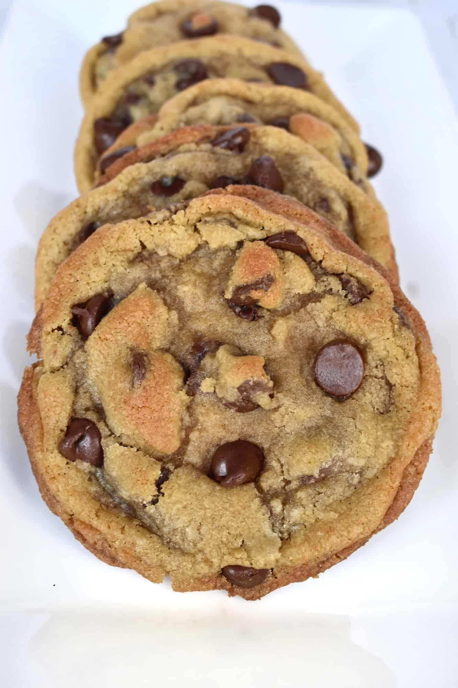

Brown Butter Chocolate Chip Cookies
2 1/4 cups all-purpose flour
1 tsp baking soda
1/2 tsp Salt
1 cup unsalted butter
1 1/2 cups brown sugar (packed)
1/4 cup granulated sugar
1 large egg + 1 egg yolk
1 tbsp vanilla extract
1 tbsp plain greek yogurt
3/4 cup semi-sweet chocolate chips
3/4 cup milk chocolate chips
Kosher salt, for garnish
Makes 20-28 cookies
Directions
1: Heat non-stick sauce pan to medium. Add butter, whisking frequently. Butter will begin to crack and foam.
After 2-3 minutes, butter will begin to turn golden-amber color. As soon as butter begins to brown and smells nutty,
remove from heat and transfer to bowl to cool. Frequently mix during this whole step, or butter will easily burn.
2: Once butter cooled, mix butter with sugars until well combined. Add egg, egg yolk, vanilla, and greek yogurt until combined.
3: In separate bowl, add dry ingredients (flour, baking soda, non-kosher salt) until combined. Slowly incorporate
both wet and dry together, adding dry to wet until fully combined. Add both chocolate chip and mix just until incorporated.
4: Chill dough for at least 2-3 hours, up to 24 hours in the fridge.
5: With chilled dough, preheat oven to 350 degrees F and form cookies on tray. Cookies should be about 2 heaping tbsp.
Bake for 9-11 minutes, let cool for 5 minutes, then sprinkle with kosher salt.
Enjoy!
